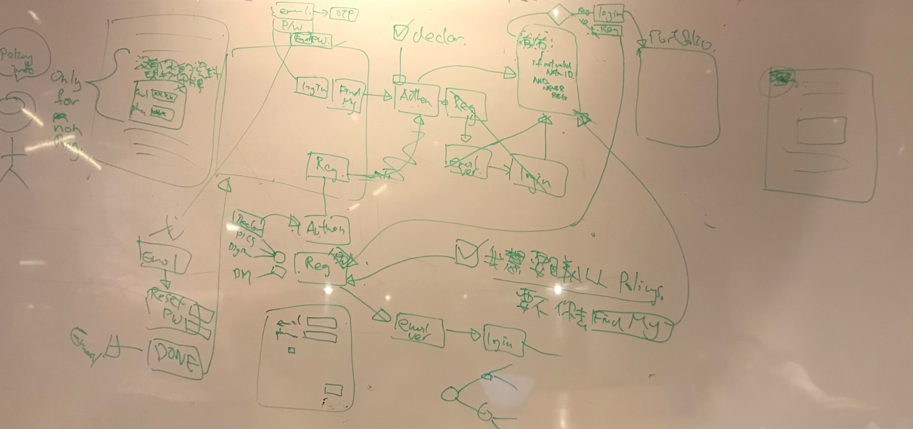

Process
Discovery Workshop
A face-to-face workshop was held to facilitate idea exchange, where stakeholders shared their expectations, desired user journeys, and identified pain points in the current process. The discussion on site flow during the workshop laid a solid foundation for exploring the project's requirements and understanding user perspectives in greater depth.
Information Architecture
The discussions with stakeholders led to the development of a structured information architecture. By delving into their expectations and needs, it was able to reframe challenges as opportunities and translate these insights into actionable questions, such as:
- How might we streamline the user journey for policy inquiries?
- How might we improve the navigation for claim submissions?
This architecture served as the backbone of the project, providing several benefits:
- Clarity: Establishing a logical framework for better content organisation
- Consistency: Maintaining a uniform navigation structure to reduce user confusion
- Alignment: Creating a visual representation of shared project team understanding
Prototypes
To address the project's complexity, a comprehensive prototype was developed using InVision. It showcased the full user journey, including login, registration, policy viewing, and claim filing. The interactive nature of the prototype helped stakeholders grasp functionality, validate expectations, and gather early feedback. By visualising the entire journey, the risk of misalignment between stakeholders, business analysts, and developers was minimised, promoting smoother collaboration.